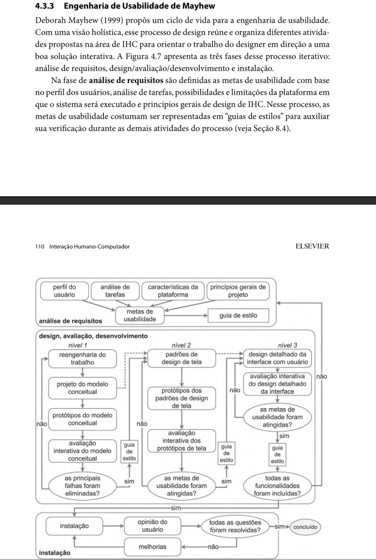

Entrega Final do Planejamento
Introdução
O planejamaento é uma das fases primordiais para o desenvolvimento de qualquer projeto e, nesse documento, pretendemos te apresentar todos os aspectos que envolveram o planejamento do nosso trabalho.
Nesse sentido, a seguir apresentamos nossos entregáveis de planejamento e uma breve visão do que foi feito.
Entregáveis
A seguir faremos uma breve recaptulação dos entregáveis, sendo possível seu entendimento, na íntegra, acessando o próprio artefato.
Heatmap
Antes de começar qualquer tipo de projeto, é fundamental que saibamos a disponibilidade de cada integrante do grupo. Portanto, cada integrante recebeu um link com acesso ao Heatmap para ser preenchido e em seguida o grupo poder decidir os horários de desenvolvimento e de reuniões.
Cronograma
A seguir apresentamos nosso cronograma final executado
| Atividade | Período de Desenvolvimento | Responsáveis | Revisão | Revisores |
|---|---|---|---|---|
| Entrega 1 | ||||
| Avaliação dos sites selecionado | Início: 20/10 Fim: 25/10 |
Kaio, Márcio e Luiza | Início:26/10 Fim: 26/10 |
Luiza |
| Selecionar ferramentasdo projeto | Início: 04/11 Fim: 04/11 |
Kaio, Márcio e Luiza | Início:12/11 Fim: 12/11 |
Kaio |
| Realização do cronograma | Início:04/11 Fim: 04/11 |
Márcio | Início:10/11 Fim:10/11 |
Luiza |
| Metodologia | Início: 07/11 Fim: 07/11 |
Luiza | Início:10/11 Fim:10/11 |
Márcio |
| Sites Avaliados | Início: 06/11 Fim: 06/11 |
Márcio | Início:11/11 Fim:11/11 |
Kaio |
| Processo de Design | Início: 06/11 Fim: 06/11 |
Luiza | Início:09/11 Fim:09/11 |
Márcio |
| Documentar Equipe | Início: 20/10 Fim: 24/10 |
Luiza | Início:25/10 Fim: 08/11 |
Márcio |
| Gravar apresentação | Início:12/11 Fim:12/11 |
Kaio, Márcio e Luiza | Início:12/11 Fim:12/11 |
Kaio |
| Implementar Git Pages | Início: 04/11 Fim:12/11 |
Luiza | Início: 13/11 Fim:13/11 |
Yuri |
| Correção após apresentação | Início:13/11 Fim:13/11 |
Márcio | Início:13/11 Fim:13/11 |
Kaio |
| Entrega 2 | ||||
| Perfil do usuário | Início: 06/11 Fim: 02/12 |
Kaio e Luiza | Início:03/12 Fim: 03/12 |
Márcio |
| Aspectos Éticos de Pesquisas | Início:28/11 Fim: 28/11 |
Márcio | Início:02/11 Fim:02/11 |
Márcio |
| Análise de Tarefas | Início: 01/12 Fim: 01/12 |
Márcio | Início:02/12 Fim:02/12 |
Luiza |
| Personas | Início: 03/12 Fim: 03/12 |
Kaio | Início:03/12 Fim: 03/12 |
Márcio |
| Gravar apresentação | Início: 03/12 Fim:03/12 |
Kaio, Márcio e Luiza | Início:03/12 Fim:03/12 |
Kaio |
| Correção após apresentação | Início:05/12 Fim:10/12 |
Márcio | Início: 10/12 Fim:12/12 |
Kaio |
| Entrega 3 | ||||
| Desenvolvimento dos princípios do projeto | Início: 02/12 Fim: 02/12 |
Luiza | Início:03/12 Fim: 03/12 |
Márcio |
| Metas de usabildade | Início:02/12 Fim: 02/12 |
Kaio | Início:03/12 Fim:03/12 |
Luiza |
| Guia de Estilo | Início: 02/12 Fim: 03/12 |
Luiza | Início:03/12 Fim:03/11 |
Márcio |
| Características da plataforma para o projeto | Início: 02/11 Fim: 02/12 |
Luiza | Início:03/12 Fim: 03/12 |
Márcio |
| Gravar apresentação | Início:03/12 Fim:03/12 |
Kaio, Márcio e Luiza | Início:03/12 Fim:03/12 |
Kaio |
| Correção após apresentação | Início:06/12 Fim:12/12 |
Márcio | Início:12/12 Fim:14/12 |
Kaio |
| Entrega 4 | ||||
| Planejamento da Avaliação do Storyboard | Início: 07/12 Fim: 09/12 |
Luiza | Início:10/12 Fim: 10/12 |
Márcio Henrique |
| Planejamento do relato dos resultados da avaliação do Storyboard | Início:08/12 Fim: 09/12 |
Luiza | Início:10/12 Fim:10/12 |
Márcio Henrique |
| Planejamento da Avaliação do Análise de tarefas | Início: 06/12 Fim: 09/12 |
Márcio Henrique | Início:10/12 Fim:10/12 |
Luiza |
| planejamento do relato dos resultados da avaliação do Análise de tarefas. | Início: 07/12 Fim: 09/12 |
Márcio Henrique | Início:10/12 Fim: 10/12 |
Luiza |
| Gravar apresentação | Início:10/12 Fim:10/12 |
Márcio e Luiza | Início:10/12 Fim:10/12 |
Márcio Henrique |
| Correção após apresentação | Início:11/12 Fim:11/12 |
Márcio | Início:11/12 Fim:11/12 |
Luiza |
| Entrega 5 | ||||
| Relato dos resultados do Story Board e da Análise de tarefas | Início: 13/12 Fim: 03/01 |
Márcio e Luiza | Início:03/01 Fim: 03/01 |
Luiza |
| Planejamento da Avaliação do Protótipo de Papel e do planejamento do relato dos resultados da avaliação do Protótipo de Papel. | Início:20/12 Fim: 05/01 |
Márcio | Início:05/01 Fim:05/01 |
Luiza |
| Gravar apresentação | Início:05/01 Fim:05/01 |
Márcio e Luiza | Início:05/01 Fim:05/01 |
Márcio |
| Correção após apresentação | Início:06/01 Fim:06/01 |
Márcio | Início:06/01 Fim:06/01 |
Luiza |
| Entrega 6 | ||||
| Relato dos resultados do Protótipo de Papel | Início: 08/01 Fim: 10/01 |
Márcio e Luiza | Início:10/01 Fim: 10/01 |
Luiza |
| Planejamento da Avaliação do protótipo de alta fidelidade | Início:10/01 Fim: 11/01 |
Márcio | Início:13/01 Fim:13/01 |
Luiza |
| Planejamento do relato dos resultados da avaliação do protótipo de alta fidelidade | Início: 12/01 Fim: 12/01 |
Luiza | Início:12/01 Fim:12/01 |
Márcio |
| Gravar apresentação | Início:14/01 Fim:14/01 |
Márcio e Luiza | Início:14/01 Fim:14/01 |
Márcio |
| Correção após apresentação | Início:16/01 Fim:16/01 |
Márcio | Início:16/01 Fim:16/01 |
Luiza |
| Entrega 7 | ||||
| Relato dos resultados do Protótipo de Pape | Início: 17/01 Fim: 19/01 |
Márcio e Luiza | Início:19/01 Fim: 19/01 |
Luiza e Márcio |
| Planejamento da Avaliação do protótipo de alta fidelidade | Início: 19/01 Fim: 22/01 |
Márcio | Início:22/01 Fim: 22/01 |
Luiza |
| Planejamento do relato dos resultados da avaliação do protótipo de alta fidelidade | Início: 22/01 Fim: 25/01 |
Luiza | Início:25/01 Fim: 25/01 |
Márcio |
| Gravar apresentação | Início:26/01 Fim:26/01 |
Márcio e Luiza | Início:26/01 Fim:26/01 |
Márcio e Luiza |
| Correção após apresentação | Início:27/01 Fim:27/01 |
Márcio e Luiza | Início:27/01 Fim:27/01 |
Márcio e Luiza |
| Entrega 8 | ||||
| Relato dos resultados da avaliação do protótipo de alta fidelidade | Início: 26/01 Fim: 26/01 |
Márcio e Luiza | Início:26/01 Fim: 26/01 |
Márcio e Luiza |
| Gravar apresentação | Início:26/01 Fim:26/01 |
Márcio e Luiza | Início:26/01 Fim:26/01 |
Márcio e Luiza |
| Correção após apresentação | Início:27/01 Fim:27/01 |
Márcio e Luiza | Início:27/01 Fim:27/01 |
Márcio e Luiza |
Metodologias
A metodologia escolhida para esse trabalho foi a utilização do Framework Scrum, dividindo o trabalho em ciclos curstos e organizados.
Dividimos os papés de cada um, de forma que Luiza ficou responsável por ser a Scrum Master e o Márcio como o Product Owner.
Cada Sprint teve duração de uma semana em que o time desenvolveu as tarefas de sua responsabilidade.
Ferramentas
As ferramentas foram escolhidas de forma a auxiliar o desenvilvimento deste projeto de forma que facilitasse o registro, a comunicação e a produção dos artefatos exigidos.


Sites avaliados
Para que fosse escolhido um site como objeto de estudo deste trabalho, foram feitas diversas avaliações de outros sites até que se fosse possível escolher o melhor.
Nesse sentido, as avaliações foram baseadas nos métodos de avaliação heurística e teve seus planejamentos baseados no Framework DECIDE, como foi estudado na disciplina.
A lista de sites foi:
Site Escolhido
Após a análise das avaliações feitas dos sites listados no tópico anterior, foi escolhido o Portal DETRAN-DF como objeto de estudo para esse trabalho.
Neste artefato podemos ver os critérios de escolha para o site, envolvendo complexidade, informações relevantes, interface fora dos padrões e disponibilidade de informações para análise.
Além disso, podemos ver a conclusão da avaliação que traz algumas informações acerca da:
- Liberdade e controle do usuário: trazendo informações sobre falta de controle e fluidez na navegação
- Prevenção de erros: Falta de feedback claro para o usuário durante interações importantes
- Consistência e padrões: A interface utiliza nomenclaturas e elementos visuais inconsistentes.
- Feedback do sistema: O site apresenta pouca resposta visual após interações do usuário.
Processo de Design
O modelo de Engenharia de Usabilidade de Mayhew (Figura 1) oferece um roteiro claro e organizado para o desenvolvimento de interfaces intuitivas. Ao guiar o designer por um processo interativo e detalhado, desde a análise do usuário até a avaliação contínua, o ciclo de Mayhew garante que o design seja centrado nas necessidades e expectativas de quem vai usar o site. A prototipagem em diferentes níveis permite testar e aprimorar a interface em cada etapa, resultando em um produto final de alta qualidade.
Motivo da Escolha
O grupo optou por utilizar o Ciclo de Vida de Mayhew como modelo para o projeto, após ponderar as características de diferentes abordagens. Acreditamos que a estrutura detalhada e bem definida do modelo de Mayhew oferece o suporte necessário para um projeto bem-sucedido, especialmente para um grupo com pouca experiência em IHC. O cronograma reflete as etapas de análise de requisitos, design, avaliação e desenvolvimento, adaptadas às particularidades do projeto. Uma adaptação importante foi a inclusão das atividades de instalação na etapa de análise de requisitos, devido à natureza do produto já finalizado.
Figura 1 - Atividades do Modelo de Ciclo de Vida de Mayhew.

Referências Bibliográficas
BARBOSA, S. D. J.; SILVA, B. S. Interação Humano-Computador. Rio de Janeiro: Elsevier, 2011.
Histórico de Versão
| Versão | Data | Descrição | Autor(es) | Revisor(es) |
|---|---|---|---|---|
1.0 |
10/02/2025 | Criação do documento | Márcio Henrique | Luiza Maluf |
1.1 |
10/02/2025 | Adição da entrega do planejamento | Luiza Maluf | Márcio Henrique |